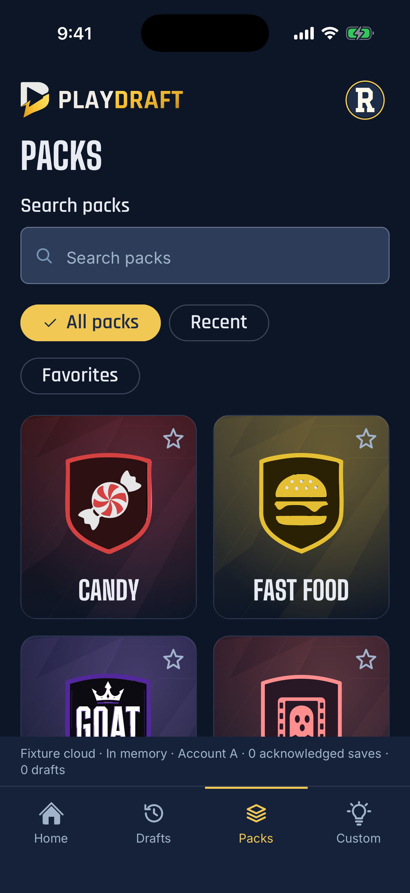

PlayDraft
A social drafting game


- On the iOS App Store Solo design and build Launched
- Destinations in the v2 navigation Home, Drafts, Packs and Custom 4
- Clock choices per pick 2 minutes or 8 hours 2
PlayDraft
02Overview
My independently built social drafting game for iPhone. Friends take turns picking favorites from everyday topics and compare the boards. The study covers the original release and the current simplification rebuild.

What held
- Brand to TestFlight in twelve weeks Then launched on the iOS App Store.
- Next-day voting retired in June So a group finishes a draft in one sitting.
- Every token appears in the in-app gallery A concrete way to review additions from agents.